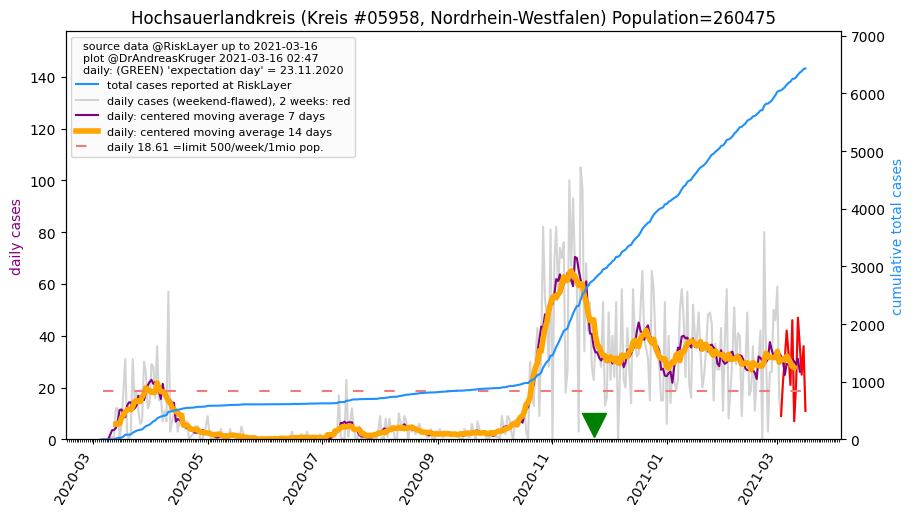
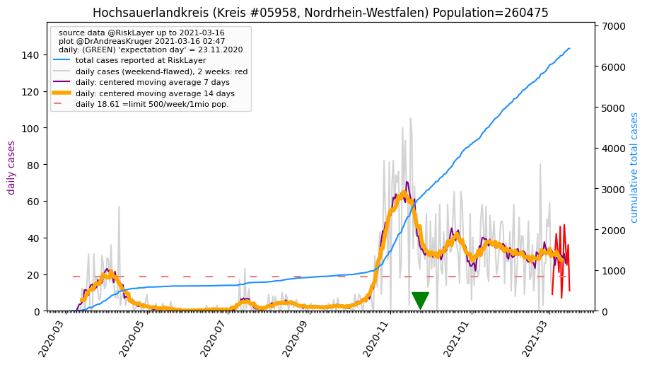

")
")
")
")
")
")
| Hochsauerlandkreis_KR (0.0 km)  |
Soest_KR (30.9 km) |
Waldeck-Frankenberg_LK (37.5 km) |
| Olpe_KR (37.7 km) |
Siegen-Wittgenstein_KR (43.2 km) |
Paderborn_KR (46.1 km) |
| Märkischer Kreis_KR (47.1 km) |
All plots are regenerated with new data every night. Beware this temporary hotspot is an experimental page - it might get removed, so please do not link to it. Instead link to project http://tiny.cc/cov19de.